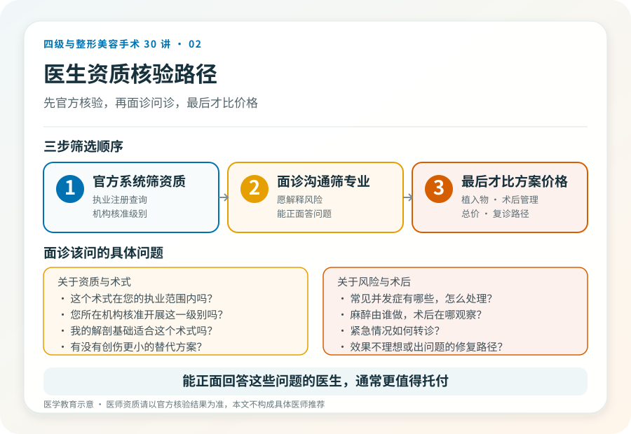

先说结论：选整形医生，硬指标比头衔和案例数更重要。一个医生能不能合法、安全地给你做某台手术，取决于执业注册的类别与范围、所在机构核准的手术级别、他本人的手术权限和专业经验。而宣传里的“院长”“首席”“国际会员”多数不是法定资质，参考意义有限。
法定资质，先看这三条
第一，执业类别与范围。医生的执业注册信息里写明执业类别（如临床）和执业范围（如外科、整形外科或医疗美容科）。做整形手术的医生，其执业范围应与所开展项目相关。第二，执业地点。注册的执业机构应与你就诊的机构一致，“多点执业”也应在官方备案可查。第三，手术权限。四级手术通常要求主刀医师具备相应资历和权限，不是任何注册了整形范围的医生都能主刀。
这三条都能在医师执业注册查询系统核到。查不到、查出来对不上，或只有一堆自印头衔，就值得多问一句。
“案例数”为什么不能完全信
案例数量是经验的一个侧面，但有两个问题。一是无法核实，很多数字来自自我陈述，没有第三方数据。二是数量不等于质量，做过一万例小项目，不等于能处理一台复杂颌面手术的术中出血。对四级手术尤其如此：关键能力是解剖熟悉度、术中判断和并发症应对，这些很难用“做了多少例”一句话概括。
《慎用“头衔”，陈春花老师的经历，值得美容医生深思》（2022-08-09，李滨医美之滨）一文讨论了医生夸大头衔的风险。这是文章中的观点，但它指向一个普遍原则：头衔的含金量取决于颁发主体的权威性，而非头衔本身的字面。
更值得问的问题
与其问“您做过多少例”，不如问这些：
- 这个术式在您的执业范围内吗？您所在机构核准开展这一级别吗？
- 这个手术常见的并发症有哪些？您遇到时通常怎么处理？
- 麻醉由谁做？术后在哪观察？出现紧急情况怎么转诊？
- 我的解剖基础（可结合影像）适合这个术式吗？有没有更小代价的替代方案？
- 如果我对效果不满意或出现问题，术后复诊和修复路径是怎样的？
能正面、具体回答这些问题的医生，通常更值得托付；反复回避或只用“放心”“保证满意”应对，是另一种信号。
专业背景的几个客观锚点
学术任职、学会会员资格、发表文献等可以作为参考，但要看颁发主体。国家级专业学会（如中华医学会相关分会）的任职有参考价值；来路不明的“国际协会”“亚太联盟”则未必。在正规教学医院受训、有公立医院整形外科工作经历、参与过复杂修复或教学，是相对可核实的背景。这些是辅助判断，不替代执业资质核验。
别被“打包价”和“咨询师”主导决策
很多机构的初诊由“咨询师”主导，医生最后只出现几分钟。对于四级手术这种高风险决策，你应该和主刀医生本人有充分沟通。如果沟通中只有报价、套餐和“今天定有优惠”，没有对你的解剖、诉求、风险和替代方案的讨论，这家机构对你这台手术的态度可能不够严肃。
一个简单的筛选顺序
先用官方系统筛掉资质不符的，再用面诊沟通筛掉不专业或不愿解释风险的，最后才比较方案细节和价格。把价格放在第一筛，很容易在第一关就留下不安全的选项。
本文用于健康教育，不能替代面诊；医师资质请以官方核验结果为准。